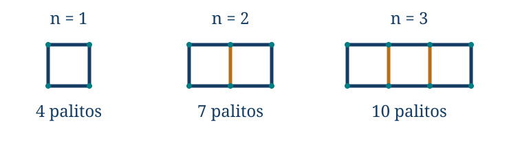
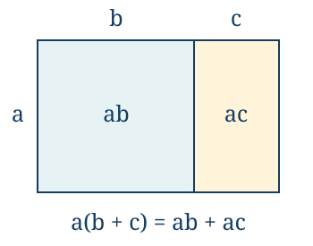

El lenguaje del álgebra: expresiones e identidades
← Estimación, aproximación y control del error · Índice del libro · Siguiente →
Construimos una hilera de cuadrados con palitos iguales. El primer cuadrado necesita cuatro; para agregar otro podemos aprovechar un lado ya construido y añadir tres palitos. Las hileras de uno, dos y tres cuadrados necesitan cuatro, siete y diez palitos. Dibujar cien cuadrados sería una manera trabajosa de contestar una pregunta cuya estructura ya tenemos delante.
Podemos contar los palitos de otra forma. Una hilera de \(n\) cuadrados tiene \(n\) palitos arriba y \(n\) abajo, además de \(n+1\) segmentos verticales. El total es \(2n+(n+1)=3n+1\). Si contáramos cuatro lados por cada cuadrado, los \(n-1\) lados compartidos aparecerían dos veces; al corregir ese exceso obtendríamos \(4n-(n-1)\). Las dos expresiones describen el mismo recuento desde perspectivas distintas. El álgebra permitirá explicar por qué coinciden para cualquier longitud de la hilera.

Problema 1. Contar sin prolongar el dibujo
Enunciado. ¿Cuántos palitos necesita una hilera de veinticinco cuadrados como la descrita? Justifica una fórmula para cualquier entero \(n\ge1\) y explica qué ocurriría al sustituir \(n=0\).
Solución. El primer cuadrado usa cuatro palitos y cada uno de los \(n-1\) restantes agrega tres. El total es \(4+3(n-1)=3n+1\). Para veinticinco cuadrados obtenemos \(3\cdot25+1=76\). El recuento horizontal y vertical también da \(2\cdot25+26=76\). La fórmula está justificada para una hilera no vacía, \(n\ge1\). Sustituir cero produciría uno, mientras que una hilera sin cuadrados usa cero palitos. La expresión algebraica admite esa sustitución como operación numérica, pero el modelo que la originó no la incluye. Un dominio forma parte de lo que afirmamos con una fórmula.
Una letra conserva una relación
La letra \(n\) nos permitió hablar de muchas hileras a la vez. En cada hilera concreta tiene un solo valor, y todas sus apariciones deben referirse a él. Si en \(3n+1\) elegimos \(n=25\), la misma elección se mantiene en \(4n-(n-1)\) al comparar las expresiones. Cambiar de valor una de las apariciones alteraría la pregunta.
Una letra puede designar una cantidad que varía, un dato que mantenemos fijo durante una investigación o un valor desconocido que buscamos. En una fórmula de costo, la distancia puede variar mientras que la tarifa permanece fija; cuando se conoce el costo y se pregunta la distancia, esa misma letra pasa a ser la incógnita. La diferencia está en el uso que hacemos de la relación. Conviene declarar qué representa cada letra, en qué unidad se mide y qué valores admite.
Problema 2. Las unidades ayudan a leer una fórmula
Enunciado. Un servicio hipotético cobra tres unidades monetarias por iniciar un traslado y \(1{,}2\) por cada kilómetro recorrido, sin otros cargos. Escribe el costo para una distancia \(d\) y calcula el de \(7{,}5\) kilómetros. ¿Qué significa el valor de la fórmula cuando \(d=0\)?
Solución. Si \(d\) es el número de kilómetros, el costo es \(C=3+1{,}2d\), en unidades monetarias, para \(d\ge0\). Para \(d=7{,}5\) resulta \(C=3+9=12\). El producto de una tarifa por kilómetro y una distancia en kilómetros deja unidades monetarias, que pueden sumarse al cargo inicial. Con \(d=0\) el modelo da tres: interpreta un traslado iniciado sin distancia recorrida. No describe el costo de no contratar el servicio. La fórmula distingue el cargo fijo de la parte que depende de la distancia.
Una expresión algebraica combina números, letras y operaciones. Puede representar un número cuando damos valores admisibles a sus letras. Una igualdad entre dos expresiones añade una afirmación que puede ser verdadera o falsa. Si es verdadera para todos los valores del dominio declarado, la llamamos identidad en ese dominio. Si preguntamos para qué valores se cumple, la tratamos como una ecuación y buscamos sus soluciones.
Problema 3. Una expresión y dos preguntas diferentes
Enunciado. Distingue el papel de \(2(x+3)\), de \(2(x+3)=2x+6\) y de \(2(x+3)=14\). Usa el dominio de los números reales.
Solución. \(2(x+3)\) es una expresión que representa el doble de la suma de un real \(x\) con tres. La igualdad \(2(x+3)=2x+6\) es una identidad, porque la distributividad la justifica para todo real \(x\). La igualdad con catorce se cumple cuando \(x+3=7\), es decir, cuando \(x=4\), y no para cualquier real. Por ejemplo, al sustituir cero la primera identidad conserva \(6=6\), mientras que la ecuación daría \(6=14\), que es falso. La escritura con signo igual necesita interpretarse junto con el alcance de la afirmación que hacemos.
Sustituir exige conservar la estructura
La sustitución reemplaza todas las apariciones de una letra por el mismo valor. Si ese valor es negativo o es otra expresión, los paréntesis conservan su papel dentro de cada operación. Por ejemplo, sustituir \(x=-2\) en \(x^2\) produce \((-2)^2\), no \(-2^2\). La diferencia ya apareció al estudiar potencias; con varias letras se vuelve especialmente fácil perderla de vista.
La notación \(ab\) designa el producto de \(a\) y \(b\); \(a\cdot b\) expresa la misma operación. En \(a(b+c)\), el paréntesis completo constituye un factor. Las barras de fracción también agrupan: primero se interpreta el numerador completo y el denominador completo, y luego su cociente.
Problema 4. Sustituir dos valores con signos
Enunciado. Calcula el valor de \(2x^2-3xy+y^2\) cuando \(x=-2\) e \(y=3\). Explica el signo del término central.
Solución. Sustituimos conservando los paréntesis: \(2(-2)^2-3(-2)(3)+3^2\). El primer término vale ocho; el producto \((-2)3\) es \(-6\), así que el término central es \(-3(-6)=18\). El último término vale nueve. La suma es \(8+18+9=35\). El signo negativo escrito delante de \(3xy\) no obliga a que el término resulte negativo: también interviene el signo de \(xy\). Todos los valores reales de \(x,y\) son admisibles en esta expresión polinómica.
Problema 5. Un valor que la expresión no admite
Enunciado. Evalúa \(\dfrac{2x+1}{x-3}\) para \(x=2\) y describe su dominio real. ¿Qué respuesta corresponde a \(x=3\)?
Solución. Para \(x=2\), el numerador es cinco y el denominador es menos uno, de modo que el cociente vale \(-5\). Para que la expresión tenga sentido debemos exigir \(x-3\ne0\), es decir, \(x\ne3\). Su dominio es \(\mathbb R\setminus\{3\}\). En tres no hay un valor real que calcular: el numerador sería siete y el denominador cero. La falta de definición no equivale a obtener cero ni un número muy grande; significa que la división solicitada no existe en los reales.
Qué términos podemos reunir
En \(3x^2-2x+5\), los sumandos \(3x^2\), \(-2x\) y \(5\) son los términos. El número que multiplica a la parte literal es su coeficiente: tres en \(3x^2\) y menos dos en \(-2x\). El coeficiente de \(x\) es uno aunque no lo escribamos; el de \(-x\) es menos uno. Conviene mantener el signo con el término al descomponer una suma.
Un monomio en las letras elegidas es un coeficiente multiplicado por potencias de esas letras con exponentes enteros no negativos. Las letras con exponente cero se omiten del producto y un monomio constante se evalúa directamente como su coeficiente. Una suma finita de monomios es un polinomio; por ejemplo, \(3x^2-2x+5\) reúne los monomios \(3x^2\), \(-2x\) y \(5\). Podemos reunir en él los términos de una misma potencia y ordenar después las potencias para comparar expresiones. Los cocientes como \(1/x\) y los radicales como \(\sqrt x\) exigirán conservar además las condiciones de sus operaciones, que estudiaremos en sus propios capítulos.
Dos términos son semejantes si tienen la misma parte literal con los mismos exponentes. Reunir \(3x\) y \(5x\) usa la distributividad en sentido inverso: \(3x+5x=(3+5)x=8x\). En cambio, \(3x+5x^2\) reúne potencias distintas y en general no puede sustituirse por \(8x^2\) ni por \(8x\). La coincidencia de algunas letras no basta.
El grado de un monomio no nulo es la suma de los exponentes de sus letras. Por ejemplo, \(2x^2y\) tiene grado tres. El grado de un polinomio no nulo es el mayor grado que queda después de reunir sus términos semejantes. Una constante no nula tiene grado cero. Dejaremos sin asignar grado al polinomio cero; esa excepción evita confundir la desaparición de todos los términos con la presencia de uno constante no nulo.
Problema 6. Restar un polinomio completo
Enunciado. Reduce \(3x^2-2x+5-(x^2+4x-7)\) y determina el grado del resultado.
Solución. Restar el paréntesis cambia el signo de cada término que contiene: obtenemos \(3x^2-2x+5-x^2-4x+7\). Reunimos las partes semejantes y queda \(2x^2-6x+12\). El coeficiente de \(x^2\) es dos y no desaparece, por lo que el grado es dos. Al sustituir \(x=1\), la expresión original vale \(3-2+5-(1+4-7)=8\) y la reducida vale \(2-6+12=8\). Esta comprobación puede detectar un error de signos; la distributividad y la reunión de términos justifican la identidad para todos los reales.
Problema 7. Las mismas letras en partes distintas
Enunciado. Reduce \(2xy+3x-xy+4y-x\) y explica por qué no se puede reunir todo en un solo monomio.
Solución. Los términos con parte literal \(xy\) suman \(2xy-xy=xy\). Los que tienen solo \(x\) dan \(3x-x=2x\), y queda además \(4y\). El resultado es \(xy+2x+4y\). Son tres partes literales diferentes. Para ver el peligro de reunir coeficientes sin respetarlas, basta observar que \(xy\) cambia como un producto de dos valores, mientras que \(x\) e \(y\) aparecen por separado. La identidad obtenida vale para todos los reales \(x,y\); cualquier simplificación adicional tendría que apoyarse en una relación nueva entre ellos.
Abrir un paréntesis sin cambiar el valor
La distributividad \(a(b+c)=ab+ac\) permite interpretar una cantidad que multiplica a una suma. Si \(a,b,c\) son longitudes positivas, un rectángulo de altura \(a\) y base \(b+c\) se divide en dos rectángulos de áreas \(ab\) y \(ac\). La igualdad de áreas ofrece una imagen de la regla. La propiedad algebraica de los reales se aplica también cuando intervienen cero o números negativos, donde esa interpretación directa por longitudes deja de servir.

Multiplicar por menos uno da \(-(b+c)=-b-c\). Si el segundo término ya lleva signo negativo, \(-(b-c)=-b+c\). Podemos comprobar la última identidad escribiendo \(b-c=b+(-c)\) y aplicando dos veces la regla de signos. Al retirar un paréntesis precedido por una resta estamos multiplicando todo su contenido por menos uno.
Problema 8. Comenzar por el paréntesis interior
Enunciado. Reduce \(5-2[3x-(2-x)]\) sin perder los signos de las restas.
Solución. Dentro del corchete, \(3x-(2-x)=3x-2+x=4x-2\). La expresión completa queda \(5-2(4x-2)\). El término que resta el paréntesis es \(-2(4x-2)=-8x+4\), así que obtenemos \(9-8x\). Para comprobar un signo delicado usamos \(x=0\): la expresión original es \(5-2[0-2]=9\), como la final. Abrir todos los paréntesis de una vez es posible, pero resolver primero el interior permite reconocer qué suma está multiplicando cada factor.
Problema 9. Los coeficientes pueden ser fracciones
Enunciado. Reduce \(\dfrac23(3x-6)-\dfrac12(4x+2)\) y decide si el resultado depende de \(x\).
Solución. El primer producto es \(2x-4\). El segundo, antes de aplicar el signo exterior, es \(2x+1\). Al restarlo queda \(2x-4-2x-1=-5\). Los términos con \(x\) se cancelan para todos sus valores reales, no solo para una elección particular. Podemos verificarlo con \(x=0\): los dos productos aportan menos cuatro y menos uno a la expresión completa. Las únicas divisiones son por los números fijos dos y tres, ambos no nulos, así que no aparece una restricción sobre \(x\).
Multiplicar dos sumas aplica la misma regla más de una vez. Cada término de una debe multiplicar a cada término de la otra. Para dos binomios,
\[(a+b)(c+d)=a(c+d)+b(c+d)=ac+ad+bc+bd.\]
El desarrollo se entiende mejor como una lista de productos necesarios que como una distribución de letras sobre el papel. Omitir uno de los cuatro productos cambia el valor; repetir uno también. Después de obtenerlos podemos reunir los que sean semejantes.
Problema 10. Cuatro productos antes de reunir
Enunciado. Desarrolla \((x+2)(x-5)\) y comprueba el resultado para un valor que haga cero uno de los factores.
Solución. Multiplicamos \(x\) por los dos términos del segundo factor y hacemos lo mismo con dos. Queda \(x^2-5x+2x-10=x^2-3x-10\). Para \(x=5\), el producto inicial vale cero porque su segundo factor es cero. El desarrollado da \(25-15-10=0\), como corresponde. La forma producto hace visible ese valor nulo; la forma desarrollada reúne la información por potencias de \(x\). Ambas representan el mismo número para cualquier real \(x\).
Productos que conviene reconocer
El cuadrado de una suma es un producto de la suma consigo misma. La regla anterior da \((a+b)^2=a^2+ab+ba+b^2\), y como \(ab=ba\), obtenemos
\[(a+b)^2=a^2+2ab+b^2.\]
Sustituir \(b\) por \(-b\) produce \((a-b)^2=a^2-2ab+b^2\). El término cruzado cambia de signo, mientras que el cuadrado final es mayor o igual que cero. Son identidades para todos los reales \(a,b\); el dibujo de áreas del capítulo de potencias ayudaba a reconocer el término cruzado cuando las longitudes eran positivas, y la distributividad proporciona el alcance general.
Problema 11. Un cuadrado cercano a otro conocido
Enunciado. Calcula \(103^2\) usando \(100+3\) y explica por qué no basta sumar los dos cuadrados.
Solución. Aplicamos la identidad: \((100+3)^2=100^2+2\cdot100\cdot3+3^2=10\,000+600+9=10\,609\). Sumar solo \(100^2+3^2\) omitiría el término cruzado seiscientos. Este aparece dos veces al desarrollar \((100+3)(100+3)\): una al multiplicar cien por tres y otra al multiplicar tres por cien. La cercanía a cien facilita el cálculo porque conserva esos productos sencillos, no porque permita borrar los productos mixtos.
Otro desarrollo tiene una cancelación diferente:
\[(a+b)(a-b)=a^2-ab+ab-b^2=a^2-b^2.\]
La igualdad permite pasar de un producto a una diferencia de cuadrados y también recorrer el camino inverso. La suma de cuadrados \(a^2+b^2\) no recibe la misma regla: al desarrollar \((a+b)(a-b)\) el último producto tiene signo negativo.
Problema 12. Dos factores a igual distancia del centro
Enunciado. Desarrolla \((2x+3)(2x-3)\) y utiliza una estructura semejante para calcular \(49\cdot51\).
Solución. Los factores tienen un término común \(2x\) y términos opuestos de valor tres. El producto es \((2x)^2-3^2=4x^2-9\). Para los números, \(49=50-1\) y \(51=50+1\); por tanto \(49\cdot51=50^2-1^2=2499\). El centro común y la separación simétrica permiten reconocer el producto. En ambos casos se puede comprobar la identidad desarrollando sus cuatro términos y viendo cómo se cancelan los dos términos cruzados.
Problema 13. Construir un cubo a partir de un cuadrado
Enunciado. Desarrolla \((x+1)^3\) sin suponer memorizada una fórmula para el cubo de una suma.
Solución. Escribimos \((x+1)^3=(x+1)^2(x+1)=(x^2+2x+1)(x+1)\). Multiplicar por \(x\) da \(x^3+2x^2+x\) y multiplicar por uno da \(x^2+2x+1\). Al sumar obtenemos \(x^3+3x^2+3x+1\). Los coeficientes tres proceden de reunir productos distintos que tienen la misma potencia de \(x\). La igualdad vale para todos los reales; por ejemplo, con \(x=2\) ambas formas dan veintisiete. La sustitución comprueba un caso, mientras que el desarrollo explica el resultado general.
Reconocer un producto dentro de una suma
Factorizar una expresión consiste en escribirla como un producto. En la hilera de cuadrados, el recuento que aprovecha los lados compartidos y el recuento horizontal y vertical condujeron a escrituras del mismo número; al factorizar haremos un cambio de perspectiva semejante. La distributividad leída en sentido inverso da \(ab+ac=a(b+c)\): la suma queda agrupada por el factor que comparten sus términos. La forma desarrollada facilita reunir potencias y coeficientes, mientras que el producto muestra factores cuyos signos o ceros podemos estudiar por separado. Escogeremos la escritura según la información que estemos buscando.
Para extraer un monomio común podemos buscar un divisor común de los coeficientes enteros y las menores potencias de las letras presentes en todos los términos. Cada sumando debe reconstruirse al multiplicar el factor extraído por su término correspondiente dentro del paréntesis. Esa comprobación evita extraer una letra de un sumando que no la contiene.
Problema 14. Un factor que también puede valer cero
Enunciado. Factoriza \(6x^3-9x^2\) extrayendo un monomio común. ¿Sigue siendo válida la igualdad obtenida cuando \(x=0\)?
Solución. Los coeficientes seis y nueve tienen divisor común tres; las potencias \(x^3\) y \(x^2\) contienen ambas el factor \(x^2\). Escribimos \(6x^3-9x^2=3x^2(2x-3)\). Al distribuir el producto recuperamos cada sumando, así que la identidad vale para todo real \(x\), incluido cero: ambos lados valen cero allí. No hemos dividido una igualdad numérica por \(x^2\); hemos reconocido un producto cuyo desarrollo coincide con el polinomio. La posible anulación del factor común no invalida la factorización.
El factor común puede ser una expresión completa. En \(u(v+w)+z(v+w)\), la cantidad \(v+w\) aparece multiplicando tanto a \(u\) como a \(z\), y podemos escribir \((u+z)(v+w)\). Mantener agrupada esa expresión ahorra un desarrollo que después tendríamos que deshacer.
Problema 15. El paréntesis es un factor
Enunciado. Factoriza \(3x(x-2)-4(x-2)\) y verifica la igualdad sin escoger un valor particular de \(x\).
Solución. Ambos sumandos contienen \(x-2\) como factor. La distributividad en sentido inverso da \((x-2)(3x-4)\). Para verificarlo de forma general, desarrollamos esta última expresión: \((x-2)3x-(x-2)4=3x(x-2)-4(x-2)\), que es la original. Si preferimos comparar polinomios, ambos desarrollos dan \(3x^2-10x+8\). Las dos verificaciones usan identidades válidas para cualquier real. Si \(x=2\), el factor común se anula y ambas expresiones siguen valiendo cero.
Problema 16. Reconstruir los dos factores
Enunciado. Factoriza \(x^2+7x+12\) como producto de dos binomios de la forma \(x+p\) y \(x+q\), con \(p,q\) enteros.
Solución. Al desarrollar \((x+p)(x+q)\) obtenemos \(x^2+(p+q)x+pq\). Para reconstruir el polinomio buscamos \(p+q=7\) y \(pq=12\). Tres y cuatro satisfacen ambas condiciones, de modo que \(x^2+7x+12=(x+3)(x+4)\). El producto verifica la respuesta: sus términos cruzados suman \(4x+3x=7x\) y el término constante es doce. Encontrar dos números cuyo producto sea doce no bastaría; también deben dar el coeficiente lineal correcto. Esta búsqueda de enteros puede fallar en otros polinomios aunque admitan una factorización con coeficientes reales.
La diferencia de cuadrados ya proporciona otra factorización: \(a^2-b^2=(a-b)(a+b)\). Para los cubos, desarrollar un producto algo mayor permite encontrar
\[(a-b)(a^2+ab+b^2)=a^3-b^3.\]
En efecto, los seis productos son \(a^3+a^2b+ab^2-a^2b-ab^2-b^3\), y los términos mixtos se cancelan por parejas. Sustituir \(b\) por \(-b\) en la identidad da también
\[a^3+b^3=(a+b)(a^2-ab+b^2).\]
Estas fórmulas se sostienen en el desarrollo; recordarlas resulta útil cuando reconocemos sus términos, pero el cálculo permite recuperarlas si olvidamos un signo.
Problema 17. La diferencia y la suma de dos cubos
Enunciado. Factoriza \(x^3-8\) y \(x^3+8\). Explica de dónde sale el coeficiente dos que aparece en el término mixto.
Solución. Escribimos ocho como \(2^3\). La diferencia da \(x^3-8=(x-2)(x^2+2x+4)\) y la suma da \(x^3+8=(x+2)(x^2-2x+4)\). El término \(2x\) procede del producto de las dos bases, \(x\cdot2\); el cuatro es el cuadrado de dos. Al desarrollar el primer producto obtenemos \(x^3+2x^2+4x-2x^2-4x-8=x^3-8\). En el segundo, \(x^3-2x^2+4x+2x^2-4x+8=x^3+8\). Las cancelaciones justifican ambas identidades para todo real \(x\).
Problema 18. Importa qué coeficientes permitimos
Enunciado. Compara la posibilidad de factorizar \(x^2-2\) y \(x^2+1\) en dos factores lineales reales no constantes. Explica por qué buscar solo enteros puede ocultar la primera factorización.
Solución. Como dos es el cuadrado de \(\sqrt2\), tenemos \(x^2-2=(x-\sqrt2)(x+\sqrt2)\). Los factores son lineales reales, aunque sus términos constantes sean irracionales; una búsqueda restringida a binomios \(x+p\), \(x+q\) con \(p,q\) enteros no los encontraría. Para \(x^2+1\), todo valor real produce un número al menos igual a uno. Si tuviera un factor lineal real no constante \(ax+b\), con \(a\ne0\), al sustituir \(x=-b/a\) el producto se anularía, contradiciendo esa positividad. Por tanto no admite esa clase de factorización. Afirmar que una expresión «no se puede factorizar» necesita precisar qué factores y coeficientes estamos permitiendo.
Completar lo que falta para reconocer un cuadrado
La expresión \(x^2+6x\) contiene los dos primeros términos de \((x+3)^2=x^2+6x+9\). Si agregamos nueve aparece el cuadrado; para conservar el valor original debemos retirar el mismo nueve. Así,
\[x^2+6x=(x+3)^2-9.\]
Esta transformación se llama completar el cuadrado. El número tres se obtiene dividiendo entre dos el coeficiente de \(x\), porque el término cruzado de \((x+h)^2\) es \(2hx\). Después debemos añadir y restar \(h^2\). La explicación determina tanto el número que entra en el paréntesis como el que se compensa fuera de él.
Problema 19. Una forma que muestra el menor valor
Enunciado. Completa el cuadrado en \(x^2+6x+5\) y determina su menor valor real y dónde se alcanza.
Solución. Añadimos y restamos nueve: \(x^2+6x+5=(x^2+6x+9)-9+5=(x+3)^2-4\). Un cuadrado real es no negativo, así que la expresión es al menos menos cuatro. Ese valor se alcanza cuando \(x+3=0\), es decir, cuando \(x=-3\). La comprobación en la forma original da \(9-18+5=-4\). Además, los valores \(x=-3+t\) y \(x=-3-t\) producen el mismo resultado \(t^2-4\), lo que muestra la simetría que la primera forma no hacía tan inmediata.
Para una expresión general \(ax^2+bx+c\), el procedimiento empieza extrayendo \(a\) de los dos primeros términos. Si \(a\ne0\), podemos escribir
\[ax^2+bx+c=a\left(x^2+\frac ba x\right)+c.\]
La mitad del coeficiente interior de \(x\) es \(b/(2a)\). Añadir y restar su cuadrado dentro del paréntesis produce
\[ax^2+bx+c=a\left(x+\frac{b}{2a}\right)^2+c-\frac{b^2}{4a}.\]
La compensación exterior es \(a\,[b/(2a)]^2=b^2/(4a)\); multiplicar ese término por \(a\) es un paso esencial. Si \(a>0\), el cuadrado multiplicado por \(a\) es no negativo y la constante exterior es el mínimo. Si \(a<0\), es no positivo y la constante es el máximo. En ambos casos se alcanza cuando \(x=-b/(2a)\). Si \(a=0\), la expresión es lineal o constante y esta fórmula con divisiones por \(a\) no se aplica.
Problema 20. El coeficiente exterior también participa
Enunciado. Completa el cuadrado en \(2x^2-12x+11\) y halla su menor valor. Explica qué cambia en una expresión de la forma \(-2(x+1)^2+3\) y por qué hay que separar el caso \(a=0\) en la fórmula general.
Solución. Extraemos dos: \(2(x^2-6x)+11\). Dentro aparece \((x-3)^2-9\), así que obtenemos \(2(x-3)^2-18+11=2(x-3)^2-7\). El mínimo es menos siete, alcanzado en \(x=3\); en la expresión original, \(18-36+11=-7\). En \(-2(x+1)^2+3\), el cuadrado está multiplicado por un número negativo, por lo que el valor es a lo sumo tres y ese máximo se alcanza en \(x=-1\). Si \(a=0\), no podemos formar \(b/(2a)\); debemos volver a la expresión inicial \(bx+c\) en lugar de sustituir en una fórmula fuera de su dominio.
Una identidad necesita una razón general
Comprobar una igualdad para algunos valores puede ayudarnos a descubrir un patrón o detectar un error. Para demostrar que es una identidad necesitamos justificarla en todo el dominio afirmado. Una cadena de igualdades basada en las propiedades de las operaciones conserva cada valor admisible sin tener que escogerlo. También podemos llevar los dos miembros a una misma forma y compararlos allí.
Problema 21. Demostrar sin sustituir números
Enunciado. Demuestra que \((x+y)^2-(x-y)^2=4xy\) para todos los reales \(x,y\).
Solución. Desarrollamos cada cuadrado con su término cruzado. La diferencia queda \(x^2+2xy+y^2-(x^2-2xy+y^2)\). Al retirar el segundo paréntesis se transforma en \(x^2+2xy+y^2-x^2+2xy-y^2\). Se cancelan los cuadrados y quedan cuatro veces \(xy\). Cada paso usa una identidad de los reales, sin divisiones ni raíces que restrinjan el dominio. También podríamos reconocer una diferencia de cuadrados: con \(A=x+y\) y \(B=x-y\), el producto \((A-B)(A+B)\) se convierte en \((2y)(2x)=4xy\).
Problema 22. Tres comprobaciones no bastan
Enunciado. Las expresiones \(x(x-1)(x-2)\) y cero coinciden para \(x=0,1,2\). ¿Son idénticas en los reales? Explica cómo podrían construirse ejemplos semejantes para cualquier lista finita de valores de prueba.
Solución. No son idénticas: para \(x=3\), el producto vale \(3\cdot2\cdot1=6\), mientras que cero permanece cero. Para una lista finita \(a_1,\ldots,a_k\), con al menos un valor, el producto \((x-a_1)\cdots(x-a_k)\) se anula en todos los valores de la lista. Si escogemos un real distinto de cada uno de ellos, ningún factor se anula y el producto es no nulo. Siempre podemos elegir uno fuera de una lista finita. Así, una batería finita de sustituciones, sin hipótesis adicionales sobre las expresiones, no garantiza una identidad. Un solo contraejemplo válido sí basta para refutarla.
Conservar los valores y conservar el dominio
Una transformación que introduce una división requiere comprobar que el divisor es distinto de cero. Por ejemplo, \(uv/u=v\) está justificado para \(u\ne0\). Para \(u=0\), el miembro izquierdo no está definido, aunque el derecho pueda tener un valor. La igualdad en el dominio común no permite atribuir al cociente valores que su escritura original excluye.
Podemos pensar una fórmula como una regla que asigna un valor a cada entrada de su dominio. Si consideramos las reglas con el mismo conjunto de llegada, definen la misma función cuando tienen el mismo dominio y asignan el mismo valor a cada entrada. Para comparar una fracción con su fórmula simplificada tendremos que conservar esos datos, además de comprobar sus valores donde existen ambas. Más adelante llamaremos codominio al conjunto de llegada y estudiaremos las funciones sistemáticamente; esta primera comparación permite controlar qué conserva una simplificación.
Problema 23. Una simplificación que rellena un hueco
Enunciado. Simplifica \(\dfrac{x^2-9}{x-3}\). Compara el dominio de la expresión original con el de \(x+3\) e interpreta qué ocurre en \(x=3\).
Solución. El denominador exige \(x\ne3\). Factorizamos el numerador: \(x^2-9=(x-3)(x+3)\). En el dominio original, \(x-3\) no es cero y podemos cancelar ese factor; el cociente vale \(x+3\). El polinomio \(x+3\), considerado por sí solo, admite todos los reales y vale seis en tres. El cociente original no tiene allí valor: produciría \(0/0\), que no está definido. Ambas reglas son iguales si restringimos también \(x+3\) a \(\mathbb R\setminus\{3\}\). Si lo dejamos definido en todos los reales, hemos construido una extensión que rellena un hueco, no demostrado que el cociente ya tuviera ese valor.
Problema 24. El paso que hace fallar una supuesta demostración
Enunciado. Se parte de \(a=b\ne0\), se escribe \(a^2=ab\) y se resta \(b^2\) para obtener \((a-b)(a+b)=b(a-b)\). Después se cancela \(a-b\), se obtiene \(a+b=b\) y se concluye \(2=1\). Identifica el primer paso inválido.
Solución. Multiplicar \(a=b\) por \(a\), restar \(b^2\) y factorizar ambos miembros son operaciones válidas. Pero la hipótesis inicial da \(a-b=0\). Cancelar ese factor equivale a dividir por cero; ese es el primer paso inválido. Antes de él solo teníamos una igualdad \(0=0\), compatible con cualquier elección no nula de \(a=b\). La condición \(b\ne0\) permitiría dividir por \(b\) al final, pero no repara la división anterior por \(a-b\). Revisar cada divisor en el momento en que aparece permite localizar el error sin desconfiar de las identidades de factorización que sí eran correctas.
Las propiedades a la vista
Las igualdades de esta tabla reúnen las herramientas utilizadas en el capítulo y las reglas de los reales que las sostienen. Pueden leerse en ambos sentidos: desarrollar un producto y reconocer sus factores son recorridos de una misma identidad. Todas las letras representan números reales; cuando una letra representa una expresión, esta debe estar definida. Las restricciones indicadas forman parte de la regla.
| Propiedad | Identidad y condiciones de uso |
|---|---|
| Conmutatividad | \(a+b=b+a\) y \(ab=ba\). Permite cambiar el orden de sumandos o factores. |
| Asociatividad | \((a+b)+c=a+(b+c)\) y \((ab)c=a(bc)\). Permite reagrupar sin alterar el orden. |
| Elementos neutros | \(a+0=a\) y \(a\cdot1=a\). |
| Opuesto e inverso | \(a+(-a)=0\); \(a\cdot(1/a)=1\) si \(a\ne0\). El opuesto existe también para cero; el inverso multiplicativo, no. |
| Producto por cero | \(a\cdot0=0\). |
| Distributividad | \(a(b+c)=ab+ac\) y \(a(b-c)=ab-ac\). |
| Factor común | \(ab+ac=a(b+c)\). La identidad vale aunque el factor común sea cero. |
| Opuesto de una suma | \(-(a+b)=-a-b\). |
| Opuesto de una diferencia | \(-(a-b)=-a+b\). |
| Términos semejantes | \(au+bu=(a+b)u\). La parte literal completa \(u\) debe ser la misma en ambos términos. |
| Producto de dos sumas | \((a+b)(c+d)=ac+ad+bc+bd\). Cada término de un factor multiplica a cada término del otro. |
| Cuadrado de una suma | \((a+b)^2=a^2+2ab+b^2\). |
| Cuadrado de una diferencia | \((a-b)^2=a^2-2ab+b^2\). |
| Diferencia de cuadrados | \(a^2-b^2=(a-b)(a+b)\). |
| Cubo de una suma | \((a+b)^3=a^3+3a^2b+3ab^2+b^3\). Se obtiene multiplicando el cuadrado por \(a+b\). |
| Cubo de una diferencia | \((a-b)^3=a^3-3a^2b+3ab^2-b^3\). Se obtiene sustituyendo \(b\) por \(-b\) en la fila anterior. |
| Diferencia de cubos | \(a^3-b^3=(a-b)(a^2+ab+b^2)\). |
| Suma de cubos | \(a^3+b^3=(a+b)(a^2-ab+b^2)\). |
| Factor común binomial | \(u(v+w)+z(v+w)=(u+z)(v+w)\). El factor compartido puede ser una expresión completa. |
| Trinomio mónico | \(x^2+(p+q)x+pq=(x+p)(x+q)\). Para reconstruir los factores deben coincidir tanto la suma como el producto de \(p,q\). |
| Completar un cuadrado | \(x^2+bx+c=(x+b/2)^2+c-b^2/4\). |
| Cuadrático general | \(ax^2+bx+c=a(x+b/(2a))^2+c-b^2/(4a)\), con \(a\ne0\). El término constante exterior es mínimo si \(a>0\) y máximo si \(a<0\); se alcanza en \(x=-b/(2a)\). |
| Cancelación de un factor | \(ab/(ac)=b/c\), con \(a\ne0\) y \(c\ne0\). Se conservan las restricciones de la expresión original, aunque la fórmula final admita otros valores. |
Las fórmulas de productos y factores no garantizan que cualquier polinomio admita una factorización del tipo que buscamos. También importa el conjunto de coeficientes permitido: en los reales podemos escribir \(x^2-2=(x-\sqrt2)(x+\sqrt2)\), mientras que \(x^2+1\) carece de factores lineales reales no constantes. Esa elección debe acompañar a la pregunta de factorización.
Demostraciones. Los apartados del apéndice desde «Distributividad, signos y términos semejantes» hasta «Cancelación y dominio de una expresión» desarrollan estas identidades. «Qué adoptamos y qué demostramos» distingue sus axiomas de partida.
Ejercicios para trabajar sin profesor
1. Una hilera de cuarenta cuadrados comparte los lados como en el problema inicial. Cuenta sus palitos de dos maneras y explica por qué la fórmula no describe la hilera vacía.
2. Un servicio hipotético cobra cinco unidades monetarias fijas y \(0{,}8\) por kilómetro. Escribe su costo en función del número de kilómetros y calcula el de \(12{,}5\) kilómetros, con dominio declarado.
3. Distingue \(3(y-2)\), \(3(y-2)=3y-6\) y \(3(y-2)=9\) como expresión, identidad o condición que debe resolverse. Comprueba la solución de la última.
4. Evalúa \(x^2-2xy+3y^2\) para \(x=-1\) e \(y=-2\), conservando los signos.
5. Evalúa \((3t-2)/(t+1)\) para \(t=-2\) y determina todos los valores reales excluidos de su dominio.
6. Reduce \(4t^2-3t+2-(t^2-5t+6)\) y da el grado del polinomio resultante.
7. Reduce \(5ab-2a+3b-2ab+a\). Explica qué términos son semejantes.
8. Reduce \(7-3[2t-(1-t)]\) y comprueba la identidad para \(t=0\).
9. Reduce \(\dfrac34(4t-8)-\dfrac13(9t+6)\) y decide si depende de \(t\).
10. Desarrolla \((t-4)(t+3)\) y verifica el resultado para \(t=4\).
11. Calcula \(98^2\) mediante el cuadrado de una diferencia. Identifica el término cruzado.
12. Desarrolla \((3t+2)(3t-2)\) y calcula \(79\cdot81\) con una estructura semejante.
13. Desarrolla \((t-1)^3\) a partir de \((t-1)^2(t-1)\), sin citar una fórmula de memoria.
14. Extrae un monomio común de \(8t^3+12t^2\) y comprueba si la identidad admite \(t=0\).
15. Factoriza \(2t(t+1)+5(t+1)\) sin desarrollar primero el paréntesis común.
16. Factoriza \(t^2-5t+6\) como \((t+p)(t+q)\) con \(p,q\) enteros. Justifica las dos condiciones que deben cumplir.
17. Factoriza \(t^3-27\) y \(t^3+27\) y comprueba ambos productos por desarrollo.
18. Factoriza \(t^2-3\) en dos factores lineales reales. Demuestra que \(t^2+4\) no admite una factorización de esa clase.
19. Completa el cuadrado en \(t^2-8t+11\) y encuentra su menor valor y dónde se alcanza.
20. Completa el cuadrado en \(-3t^2+18t-20\) y decide si la constante exterior representa un mínimo o un máximo.
21. Demuestra \((u+v)^2+(u-v)^2=2u^2+2v^2\) para todos los reales \(u,v\).
22. Las expresiones \(t(t+1)(t-1)\) y cero coinciden para \(t=-1,0,1\). ¿Constituye eso una identidad? Da un contraejemplo y explica el alcance de la comprobación.
23. Simplifica \((t^2-4)/(t-2)\) conservando su dominio original. Compara con la regla \(t+2\) definida para todo real.
24. Para resolver \(x^2=4x\), alguien divide por \(x\) y obtiene solo \(x=4\). Encuentra el valor que perdió, localiza la restricción de ese paso y explica cómo factorizar conserva las dos posibilidades.
Soluciones desarrolladas
Ejercicio 1. Dos recuentos de una misma hilera
El primer cuadrado requiere cuatro palitos y los treinta y nueve siguientes agregan tres cada uno. El total es \(4+3\cdot39=121\). Contando por orientación, hay ochenta palitos horizontales y cuarenta y uno verticales, otra vez ciento veintiuno. Para \(n\ge1\), ambos recuentos dan \(3n+1\). Con \(n=0\), esa expresión vale uno y no representa los cero palitos de una hilera vacía. El dominio del modelo sigue siendo parte de la respuesta.
Ejercicio 2. Un cargo fijo y una distancia variable
Si \(d\) es el número de kilómetros recorridos, el costo es \(C=5+0{,}8d\) unidades monetarias, con \(d\ge0\). Para \(d=12{,}5\), el producto \(0{,}8\cdot12{,}5\) vale diez y el costo es quince. La parte variable tiene las mismas unidades que el cargo fijo y puede sumarse a él. La fórmula corresponde al modelo de servicio iniciado y sin otros cargos; una distancia negativa no tiene interpretación en él.
Ejercicio 3. El alcance de un signo igual
\(3(y-2)\) es una expresión, a la que podemos asignar un valor cuando conocemos \(y\). La igualdad \(3(y-2)=3y-6\) es una identidad en los reales por distributividad. La condición \(3(y-2)=9\) exige \(y-2=3\), de donde \(y=5\). Al sustituir cinco obtenemos \(3(5-2)=9\). La condición no vale para todos los reales: por ejemplo, con \(y=2\) su miembro izquierdo es cero. La identidad anterior sí sigue siendo válida con ese valor.
Ejercicio 4. Un producto de dos negativos dentro de una resta
Sustituimos y obtenemos \((-1)^2-2(-1)(-2)+3(-2)^2\). El primer término es uno; el producto \(xy\) es dos y el término central vale menos cuatro; el último es doce. La suma es \(1-4+12=9\). El cuadrado de menos dos es cuatro porque el signo pertenece a la base completa. Ninguna operación introduce restricciones en estos valores reales.
Ejercicio 5. La evaluación y el dominio se revisan por separado
Para \(t=-2\), el numerador vale \(-6-2=-8\) y el denominador \(-2+1=-1\). El cociente es ocho. Para cualquier sustitución debe cumplirse \(t+1\ne0\), así que el único valor excluido es \(t=-1\). El dominio real es \(\mathbb R\setminus\{-1\}\). Obtener una respuesta válida en menos dos no elimina la necesidad de declarar la restricción general.
Ejercicio 6. Cambiar todos los signos del paréntesis restado
La expresión se convierte en \(4t^2-3t+2-t^2+5t-6\). Reunimos términos y obtenemos \(3t^2+2t-4\), de grado dos porque el coeficiente de \(t^2\) es tres. Para comprobar los signos constantes, con \(t=0\) la expresión original da \(2-6=-4\), igual que la reducida. La igualdad general se justifica al aplicar la distributividad del signo menos a los tres términos del paréntesis.
Ejercicio 7. Coeficientes de partes literales iguales
Los términos \(5ab\) y \(-2ab\) suman \(3ab\); los términos \(-2a\) y \(a\) suman \(-a\). Permanece además \(3b\). El resultado es \(3ab-a+3b\). Las partes literales \(ab\), \(a\) y \(b\) son diferentes, aunque compartan algunas letras. No se pueden reunir sus coeficientes como si multiplicaran un mismo número para todas las elecciones de \(a,b\).
Ejercicio 8. Restar una diferencia
Primero, \(2t-(1-t)=2t-1+t=3t-1\). Después, \(7-3(3t-1)=7-9t+3=10-9t\). Para \(t=0\), la expresión original es \(7-3[0-1]=10\) y la final también vale diez. El signo positivo de tres proviene del producto de menos tres por menos uno, no de un cambio arbitrario al retirar el corchete.
Ejercicio 9. Una expresión que pierde su parte variable
El primer producto es \(3t-6\) y el segundo es \(3t+2\). Restando el segundo completo obtenemos \(3t-6-3t-2=-8\). El resultado no depende de \(t\): los términos variables se anulan idénticamente. Los denominadores son los números fijos cuatro y tres, distintos de cero; la identidad vale para todo real \(t\).
Ejercicio 10. Verificar un cero visible en la forma producto
Al distribuir, \((t-4)(t+3)=t^2+3t-4t-12=t^2-t-12\). Para \(t=4\), el producto tiene un factor cero y por tanto vale cero. El polinomio desarrollado da \(16-4-12=0\). Esta coincidencia verifica el valor pedido; los cuatro productos y su reunión demuestran la identidad general.
Ejercicio 11. El cuadrado de una diferencia
\(98^2=(100-2)^2=100^2-2\cdot100\cdot2+2^2=10\,000-400+4=9604\). El término cruzado es menos cuatrocientos: aparece porque hay dos productos entre cien y menos dos. El cuadrado del segundo término es positivo. Si se omitiera el término cruzado, se obtendría un número mayor que diez mil, incompatible con que noventa y ocho sea menor que cien y ambos sean positivos.
Ejercicio 12. Conjugados algebraicos y numéricos
El producto de los binomios es \((3t)^2-2^2=9t^2-4\). Para el cálculo numérico usamos el centro ochenta: \(79\cdot81=(80-1)(80+1)=80^2-1=6399\). En ambos productos, los términos cruzados tienen signos opuestos y se cancelan. El signo menos del último cuadrado se conserva al pasar a la forma desarrollada.
Ejercicio 13. Recuperar los coeficientes del cubo
Tenemos \((t-1)^2=t^2-2t+1\). Multiplicamos por \(t-1\): el producto por \(t\) da \(t^3-2t^2+t\), y el producto por menos uno da \(-t^2+2t-1\). Al sumar queda \(t^3-3t^2+3t-1\). Para \(t=1\), tanto el cubo original como este polinomio valen cero. Los coeficientes y sus signos proceden de los productos y la reunión de términos.
Ejercicio 14. Un factor común no es un divisor impuesto al dominio
Los coeficientes ocho y doce comparten el factor cuatro y ambas potencias de \(t\) contienen \(t^2\). La factorización es \(8t^3+12t^2=4t^2(2t+3)\). Al distribuir recuperamos los dos términos originales, incluso si \(t=0\), donde ambos lados valen cero. La extracción de un factor de un polinomio establece una identidad; no exige que el valor de ese factor sea no nulo.
Ejercicio 15. Mantener visible el factor repetido
El paréntesis \(t+1\) multiplica a \(2t\) y a cinco. Extraerlo da \((t+1)(2t+5)\). La comprobación general es distribuir: \((t+1)2t+(t+1)5=2t(t+1)+5(t+1)\). En \(t=-1\) los dos miembros valen cero, así que esa posible anulación tampoco restringe la identidad.
Ejercicio 16. Suma y producto de los términos constantes
Desarrollar \((t+p)(t+q)\) produce \(t^2+(p+q)t+pq\). Necesitamos \(p+q=-5\) y \(pq=6\). Los valores menos dos y menos tres cumplen ambas condiciones, de modo que \(t^2-5t+6=(t-2)(t-3)\). El producto se comprueba como \(t^2-3t-2t+6\). Elegir dos y tres habría conservado el producto seis, pero dado signo positivo al coeficiente lineal.
Ejercicio 17. Reconocer veintisiete como cubo
Como \(27=3^3\), la diferencia es \((t-3)(t^2+3t+9)\) y la suma es \((t+3)(t^2-3t+9)\). El primer desarrollo da \(t^3+3t^2+9t-3t^2-9t-27=t^3-27\). El segundo da \(t^3-3t^2+9t+3t^2-9t+27=t^3+27\). Las igualdades son válidas para todos los reales \(t\), con independencia de que algún factor se anule.
Ejercicio 18. Factores reales y positividad
La diferencia se factoriza como \(t^2-3=(t-\sqrt3)(t+\sqrt3)\). En cambio, \(t^2+4\ge4>0\) para todo real. Si tuviera un factor lineal real no constante \(at+b\), ese factor se anularía en el real \(-b/a\) y haría cero el producto, lo cual es imposible. La conclusión se refiere a dos factores lineales reales no constantes; no excluye escribir un producto trivial con un factor constante.
Ejercicio 19. La mitad del coeficiente y su cuadrado
La mitad de menos ocho es menos cuatro y su cuadrado es dieciséis. Añadimos y restamos dieciséis: \(t^2-8t+11=(t-4)^2-16+11=(t-4)^2-5\). El menor valor es menos cinco, alcanzado en \(t=4\). En la forma original obtenemos \(16-32+11=-5\). Cualquier otro valor de \(t\) deja un cuadrado positivo y da un resultado mayor.
Ejercicio 20. Un coeficiente exterior negativo
Extraemos menos tres de los dos primeros términos: \(-3(t^2-6t)-20\). Dentro, \(t^2-6t=(t-3)^2-9\). Al sustituir obtenemos \(-3(t-3)^2+27-20=-3(t-3)^2+7\). El término del cuadrado es no positivo, por lo que siete es el máximo, alcanzado en \(t=3\). La expresión puede bajar sin cota inferior al hacer grande \(|t-3|\); no tiene mínimo real. Al desarrollar la forma obtenida recuperamos \(-3t^2+18t-20\).
Ejercicio 21. Los términos cruzados se compensan en una suma
Los cuadrados desarrollados son \(u^2+2uv+v^2\) y \(u^2-2uv+v^2\). Al sumarlos se cancelan los términos cruzados y quedan \(2u^2+2v^2\). La deducción usa identidades válidas para cualquier par de reales y no requiere dividir por ninguno de ellos. En particular, los valores cero o los pares de signos opuestos están incluidos.
Ejercicio 22. Un contraejemplo fuera de la lista
En \(t=-1,0,1\) se anula respectivamente uno de los factores, así que los tres resultados son cero. Para \(t=2\), el producto vale \(2\cdot3\cdot1=6\), que no coincide con cero. La igualdad no es una identidad en los reales. Las tres sustituciones solo demostraban coincidencia en tres entradas; al salir de esa lista encontramos una diferencia. Sin una hipótesis adicional que limite la clase de expresiones, no puede ampliarse el alcance de esas comprobaciones.
Ejercicio 23. El dominio que debe acompañar a la respuesta
El cociente exige \(t\ne2\). En ese dominio, \(t^2-4=(t-2)(t+2)\) permite cancelar el factor no nulo \(t-2\) y obtener \(t+2\). La respuesta completa es esa fórmula con dominio \(\mathbb R\setminus\{2\}\). La regla \(t+2\) definida en todo \(\mathbb R\) también asigna cuatro a la entrada dos, donde el cociente original no existe. Coinciden en el dominio original y son la misma función si restringimos la segunda regla a él; con dominios distintos, la segunda es una extensión.
Ejercicio 24. Una división que pierde una posibilidad
El valor \(x=0\) satisface \(x^2=4x\), pero no puede pasar por la división entre \(x\). Ese paso solo es válido bajo la condición \(x\ne0\) y encuentra la solución cuatro dentro de ese caso. Podemos conservar ambos casos escribiendo \(x^2-4x=x(x-4)\) y planteando \(x(x-4)=0\). En los reales, un producto nulo tiene algún factor nulo: si el primero fuera no nulo, su inverso obligaría a que el segundo fuera cero. Obtenemos \(x=0\) o \(x=4\) y ambos verifican la ecuación inicial. El estudio de ecuaciones del capítulo siguiente desarrollará este control de equivalencia de manera sistemática.
Diagnóstico de salida
Escoge una expresión que puedas escribir desarrollada, factorizada y mediante un cuadrado completo. Explica qué pregunta permite contestar con más facilidad cada forma. Después revisa una simplificación con cociente: señala el dominio original y el valor que se perdería de vista si entregaras solo la fórmula final.
Las identidades ofrecen caminos para transformar una expresión sin cambiar sus valores admisibles. Al resolver una ecuación tendremos que cuidar, además, el conjunto de valores que satisfacen una condición. Una división puede excluir una solución y otras operaciones pueden introducir candidatos que después habrá que comprobar. Esa será la pregunta que organice el próximo capítulo.
← Estimación, aproximación y control del error · Índice del libro · Siguiente →